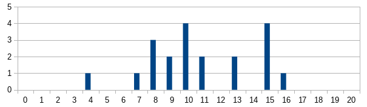

Info
- Kontakt: blazeva1 (na) fit.cvut.cz
- Konzultace: Po domluvě emailem
- Kde mě najdete: Budova A, 13. patro, kancelář 1326
AG1 pro paralelku 109 (Čtvrtek 16:15-17:45).
Na této stránce najdete seznam probrané látky společně s dalšími úlohami k procvičení látky.
Body za aktivitu budou za domácí úkoly (max 5b). Jeden bod za jednu úlohu. Můžete očekávat přibližně jednu standardní a jednu programovací úlohu za 14 dní. Standardní úlohy lze poslat mailem či na papíře. Vyřešení programovací úlohy je potřeba doložit AC (poslat odkaz odevzdání) na testovacím serveru (CF ↗). Nejzašší termín odevzdání úlohy je v den cvičení do 23:59.
Aktuální úkoly (pošlete mailem)
Úlohu vypracujte včetně postupu, odvození vzorečků, atd.
- Jak vyhledat konkrétní hodnotu v uspořádaném 2D poli (seřazeném shora i zleva) v O(N)
Starší, ale neřešené úlohy; můžete stále odevzdat.
- (1b) Navrhněte algoritmus, který najde způsob, jak rozřezat řetězec na minimální počet palindromů. Měl by pracovat v čase $O(n^2)$. (lze i v $O(n)$)
- (1b) Mějme pole s $N$ integery. Efektivně najděte nejdelší vybranou podposloupnost. (v čase O(N log N))
- (1b) Navrhněte úpravu algoritmu pro hledání minimální triangulace takovou, aby dovedla danou triangulaci vrátit.
12. cvičení 12.12.
Kostry a nejkratší cesty, Unioin-Find algoritmus
Probrané úlohy
- Nejdelší bitonická podposloupnost
- Minimalní (vážené) vrcholové pokrytí na stromu a greedy trhaní listů pro neváženou variantu.
- Jak se liší kostra grafu, pokud odebereme/přidáme hranu, změníme váhu hrany?
- Unikátnost vah není nutná pro nalezení minimální kostry, jen zaručuje její unikátnost. Důkaz minimality pro Kruskala na grafu s neunikátními vahami.
- Použití Union-Find (aneb. Disjoint Set Union) v implementaci Kruskala.
- Jak rychle hledat kostru grafu s omezenými váhami, třeba 1 až 5? (pro Kruskala i Jarníka)
Extra úlohy
- rychlé vyhodnocení rekurence jedné proměnné pomocí rychlého mocnění matice
- dynamika - nejdelší cesta uvnitř stromu
- nejkratší cesty - Dijkstra
- minimální kostra - Jarnik-Prim, Karatsuba, jak se mění při změně jedné váhy, na grafu s nízkými vahami, Union-Find, hledání druhé nejmenší kostry
11. cvičení 05.12.
Dynamické programování
Probrané úlohy
- top-down a bottom-up rozbor dynamiky pro napočtení jak zaplatit co nejvíce za N itemů, pokud máme v budgetu pouze M peněz
- počet cest mezi top-sorted N městy
- dláždění plochy $N \times 2$ pomocí bloků velikosti 2x1 a 1x1
Extra úlohy
- jak najít nejlevnější cestu mezi rohy v obdélníku plném čísel
- hledání nejdelšího palindromu v řetězci v $O(n^2)$ (btw lze O(n))
- rozřezat string na nejmenší počet palindromů
- Longest Increasing Subsequence (LIS) v čase $O(n \log n)$
- minimální vrcholové pokrytí ve stromě (3-stavová stromová dynamika)
- LIS s jedním poklesem (lze zobecnit až na k poklesů)
10. cvičení 28.11. (semestrální test)

9. cvičení 21.11.
Rychlé řazení speciálních typů dat
Probrané úlohy
- Counting sort, Radix sort
- inplace a stabilita
- Efektivní řazení řetězců (upravený radix sort)
- Jak napočítat inverze permutace pomocí úpravy Merge sortu.
- diskuse nad písemkou
Extra úlohy
- Jak rychle vyhledat konkrétní hodnotu v uspořádaném 2D poli (seřazeném shora i zleva) v O(N)
- Rychlé násobení (Karatsuba)
- Rychlé mocnění pomocí metody square multiply.
- Navrhněte algoritmus pro zjištění duplikátů v N prvkovém poli v čase O(N).
- Je potřeba osvítit každý čtvereček temné ulice. Na každém čtverečku je lampa se zadanou spotřebou. Aby byl čtvereček osvícen musí být buď rozsvícena jeho lampa, nebo obě sousední. Jaká je minimální spotřeba spuštěných lamp tak, aby všechny čtverečky osvítily. (DP, úloha z Kasiopea MFF)
- Navrhněte algoritmus, který rychle najde maximum v poli. Prvky v poli tvoří konkávní posloupnost - tedy v poli je právě jedno maximum a pro ostatní prvky platí, že je prvek menší než jeden jeho soused. Analyzujte složisost.
8. cvičení 14.11.
Rekurzivní algoritmy, metoda Rozděl a panuj
Probrané úlohy
- Hanojské věže – Rekurzivní postup v $2^n-1$. Proč je $2^n-1$ optimální? Co když nemůžeme přesouvat mezi kupou A a C přímo?
- Řazení spojového seznamu v O(N log N) a O(log N) pomocné paměti, vylepšení na O(1) pomocnou paměť.
- Zjišťování špatných vstupů quick sortu pro danou volbu pivota (první, prostřední, průměr).
- Jak najít společný medián dvou polí, pokud je nechci slít, postupně v O(N log N), O(N), O(sqrt(N)), O(log^2 N), O(log N).
- Jak malým počtem měření zjistit, které konce kabelů jsou vzájemně propojeny.
Extra úlohy
- Jak zjistit unikátnost prvků v poli.
7. cvičení 07.11.
AVL, pravděpodobnost, hešování
Probrané úlohy
- Úvod k pravděpodobnosti, pravděpodobnostní prostor, elementární jev, náhodná proměnná, střední hodnota.
- Generování náhodného čísla z rozahu 0 až N-1 s uniformní pravděpodobností pomocí férové mince.
- Rozdíl ve worst case deterministického a náhodného algoritmu.
- Generování náhodné permutace.
- Kolik se provede operací před zaplněním celého pole pomocí hešovací funkce, která se chová náhodně.
- Vkládání do hešovací tabulky, kolize, dvojité hešování, hledání kolizní sekvence prvků.
Extra úlohy
- Odebírání při otevřeném adresování je potřeba dělat pomocí náhrobků.
- Monty Hall problém
- Jak z velikého soboru vybrat K náhodných řádek tak, aby každá měla stejnou pravděpodobnost? (opět nemůžeme soubor načíst celý a neznáme jeho délku)
- Mějme dvojté hashování s hashovací funkcí: $h(k,i)=(k + i,h_2(k)) \bmod 11$; kde $h_2(k)=2+k \bmod 3$; vložte do hashovací tabulky (s velikostí jedenáct) prvky 2,4,6,12,11,42 a 46
- Najděte alespoň 2 hodnoty, pro které (u předchozí úlohy) platí, že budou mít stejnou fci $h$ i $h_2$ jako číslo 13.
6. cvičení 31.10.
Binární haldy ↗, Binomiální haldy ↗, BV stromy ↗, AVL stromy ↗
Probrané úlohy
- opakování binomiálních hald - extract min, merge, decrease, delete a increase value
- BVS ↗, opakované hledání následníka
- Algoritmus, který vyváží BVS v $O(n)$ (postavení z pole). Vylepšení, které udrží BVS vyvážený amortizovaně v $O(\sqrt{n})$.
- Vyvažované stromy - AVL ↗, vkládání, rotace a mazání
- Ochutnávka dynamického programování (DP) - Jak se hledá nejdelší cesta ve stromě.
Extra úlohy
- AVL s minimálním počtem vrcholů
- Zjistěte jestli se pošle vyvažovací signál výše, a jaké příznaky budou v AVL po vymazání nějakého prvku z levého podstromu vrcholu X, pokud X měl příznak (+) a jeho pravý syn (Y) měl příznak (-). (rozeberte případy)
- pre,in,post-order průchody stromu - kde je ve výpise podstrom zadaného vrcholu?
5. cvičení 24.10.
binární haldy, amortizovaná analýza
Probrané úlohy
- Mějme rovnoramenné váhy, které umí rozhodnout která hromada kuliček je těžší.
- Na kolik vážení zjistíme, která z devíti kuliček je těžší?
- Na kolik vážení to lze pro 12 kuliček, a proč to nejde pouze na 2?
- Obecné dolní a horní meze na najití těžší kuličky.
- binární haldy ( postavení v O(n) ), heap sort
- nafukovací pole účetní metodou, jak vyjdou jiné multiplikativní konstanty
- increase bin. čísla přímým výpočtem
Extra úlohy
- Hledání jedničkové podmatice v matici nul a jedniček. Naivně v O(N^6), předpočtem v O(N^4). Lze O(N^2) pokud si předpočteme dva součty: počet jedniček do první nuly, směrem nahoru i dolu; uvědomíme si, že pokud budeme procházet všechny řádky a budeme při první jedničce po předchozí nule počítat největší možné rozměry obdélníku, který zde začíná, tak projdeme každé políčko jen jednou a najdeme při tom výsledek.
- Navrhněte, jak zakódovat aritmetický výraz se závorkami a operacemi $+,-,\times,/$ do stromu. Ukažte algoritmus, který strom se zakódovaným výrazem zderivuje.
- sloučení k seřazených posloupností v $nk \log(k)$
- Nakreslete binomiální haldu s 42 prvkama.
- Navrhněte operaci increase value prvku binomiální haldy (máte pointer a novou hodnotu) v $\log n$. Pamatujte, že nelze procházet všechny syny, páč jich je moc, a nevyšla by dobrá složitost.
4. cvičení 17.10.
DFS, topologické uspořádání, sqrt dekompozice, řazení ↗
Probrané úlohy
- V grafu jsou 2 vrcholy takové, že po jejich odebrání zůstane graf souvislý.
- BFS - Loydova patnáctka
- maximální vzdálenost vrcholů
- algoritmus pro zjištění bipartitnosti grafu
- hledání topologického uspořádání pomocí odřezávání listů
- příklady na topologické uspořádání
- Běžci si pamatují některé, kteří doběhli před nimi, je možné rekonstuovat jednoznačné pořadí pouze z této informace?
- Mocnina matice sousednosti A (v mat. je $A_{a,b}=1$ pokud vede hrana z a do b, 0 jinak) na K, nová matice $A^K$ vyjadřuje počet různých sledů z vrcholu a do b.
- Hledání minima v poli vyžaduje N-1 porovnání.
- Hledání sqrt(n) nejmenších prvků v čase O(n)
Extra úlohy
- Jak rychle najít k-tý nejmenší prvek v neseřazeném poli?
- Počet topologických uspořádání v orientovaném $K_n, K_{n,n}, n \times C_4$?
- Jaká je (maximální) délka nejkratší cesty mezi libovolnými uzly $u,v$ v grafech: $K_n, K_{n,m}, C_n, $
- Jak zjistit jestli existují právě 2 topologicá uspořádání?
- Vyberme hranu e z grafu G, existuje vždy kostra taková, že obsahuje hranu e?
- Mějme graf G se startem a cílem ve kterém má každá hrana danou nosnost. Ve startu stojí nákladní vůz k neomezenou kapacitou. Jak těžký náklad lze na nákladní vůz naložit tak, aby se dostal do cíle po hranách s větší nostností, než je váha jeho nákladu?
3. cvičení 10.10.
podgrafy, stromy, kostry, DFS, BFS, orientované grafy
Probrané úlohy
- házení vajíček z paneláku (počet vajíček: 1, \infty, 2)
- omezení počtu listů (2 - n-2) a extrémní grafy, dolní mez $|L| \geq \Delta(T)$
-
vnitřních vrcholů pro zadaný počet listů a stupně vnitřních vrcholů
- počet koster grafů $P_n, T, K_n, K_{1,n}, C_n, K_{2,n}$
- Pro soubor kladných čísel A existuje strom T se souborem stupňů A právě tehdy, když suma prvků A=2|V|-2.
- počet koster různých grafů
- DFS & BFS, poznámky k implementaci
- Mějme mřížku NxN, některá políčka jsou dostupná a jiná jsou zdi. Na mřížce máme figurku ‘kulhavého koně’. Kůň začíná na políčku s a chceme dojít na políčko e. Kulhavý kůň se pohybuje každý lichý krok jako kůň, a každý sudý krok jako král. Navrhněte algoritmus, který najde nejkratší (nejméně pohybů) cestu tohoto koně z s do e.
- připomenutí a rozebrání úkolu na progtestu
Extra úlohy
- Kolik hodů vajíčkem potřebuju, abych zjistil patro, ze kterého se rozbije, pokud mám tři vajíčka?
- jak v DFS
- vypsat cestu ze startu do cíle?
- spočíst souvislé komponenty?
- jak v BFS
- zjistit nejmenší vzdálenost vrcholů?
- najít nejkratší cestu?
- nejvyšší / nejnižší počet hran G s n vrcholy a c komponentami
- Máme 3 nádoby, které mají kapacity A, B a C. Navrhněte algoritmus, který zjistí jak odměřit D litrů? (nelze zloušet od oka, lze pouze nádoba naplnit, vylýt, přelít apod.)
2. cvičení 03.10.
automorfismus, doplněk grafu, slabá ↗ souvislost, podgraf, indukovaný podgraf
Probrané úlohy
- Počet automorfismů grafu a jeho doplňku je stejný.
- Zjistěte počet automorfismů pro kliku o šesti vrcholech, ze které jsme odebrali dvě hrany, které spolu nesousedí (tj. hrany bez společného uzlu), zkuste zobecnit na kliku s N vrcholy bez dvou hran.
- Co nejmenší graf s pouze jedním automorfismem.
- Graf obsahující kružnici jako podgraf obsahuje i indukovanou kružnici jako podgraf.
- Existuje nesouvislý graf G, který má nesouvislý doplněk? (komplet formální důkaz)
- Vzorce pro počet (indukovaných, hranových, všech) podgrafů kliky K_n.
Extra úlohy
- Kolik existuje různých cest délky M uvnitř kliky $K_n$ nebo v bipartitním grafu $K_{n,n}$?
- Graf obsahující lichou kružnici jako podgraf obsahuje i lichou indukovanou kružnici jako podgraf.
- Grafy jsou isomorfní právě tehdy pokud jsou jejich doplňky izomorfní.
- Dokažte nebo vyvtaťte, že v oritentovaném grafu se vstupním i výstupním stupni >= 1 vždy existuje orientovaný cyklus.
- Kolik existuje $C_4$ na 4-partitním grafu $K_{n,n,n,n}$?
- Kolik existuje různých cest délky M mezi uzly x a y uvnitř kliky $K_n$ nebo v bipartitním grafu $K_{n,n}$?
- Určete (nakreslete) všechny indukované podgrafy kliky $K_5 - e$ (K5 bez hrany).
- Určete (nakreslete) všechny (neizomorfní, tzn. prostě všechny) podgrafy kliky K4.
1. cvičení 25.09.
podmínky zápočtu ↗, vrchol, hrana, stupeň, soubor stupňů, princip sudosti, regularita
Probrané úlohy
- Formální zápis grafu $G=(\{1,2,3\},\{\{1,2\},\{2,3\}\})$ a existence grafů za různých podmínek.
- Pro která n existuje graf, ve kterém má každý vrchol jiný stupeň? (nelze)
- Pro která n existuje graf, ve kterém má každý vrchol jiný stupeň, kromě dvou, které mají stejné?
- podmínky isomorfismu ↗ (#uzlů, #hran, stupně, sousedi, …)
- Jsou každé dva $(n-1)$-regulární grafy izomorfní (|V|=n, n>0)? (ano, jsou to kliky)
- Jsou každé dva $(n-2)$-regulární grafy izomorfní (|V|=n, n>1)?
- Počet neisomorfních grafů na čtyřech vrcholech.
Extra úlohy
- Kolik vypíše program hvězdiček?
- Funkce podle asymptotické složitosti ↗ ($n \log n$, $2^n$, $n^2$, $\sqrt{n}$, $n!$, $\log^2 n$, $\log {\sqrt{n}}$, $\sqrt{\log{n}}$, $n^{21}$)
foo(q)
for i := 1 to q do
print(#)
foo2(N)
for i := 1 to N do
foo(i)
j=1
while j<=N do
foo(j)
j=j*2
- Kolik se vypíše znaků # pro výše uvedený program při zavolání funkce foo2?
- Navrhněte dvojici grafů, každý s alespoň šesti vrcholy, které nejsou isomorfní, ale mají stejný soubor stupňů.
- Lze rozložit úplný graf $K_n$ (n je sudé) na sjednocení hranově disjunktních 2-regulárních grafů?